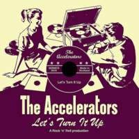

the Accelerators - Let's Turn It Up (Album, 2010)
01 - Gonna Be With You (2:49)
02 - Sugaree (2:39)
03 - Donna The Prima Donna (2:45)
04 - Blue Days Black Nights (2:25)
05 - Let It Roll (1:57)
06 - Had To Let You Know (3:11)
07 - She Moves Me (2:37)
08 - Pretty Baby (2:02)
09 - Real Wild Child (2:21)
10 - Early In The Morning (2:14)
11 - Sleepwalk (2:20)
12 - Little Suzie (3:23)
© the Accelerators :: [SDSMCD 2010]
Notes
United Kingdom, Scotland.
Recorded at Monomen Studios, Glenrothes, Fife, Scotland
reference information: Discogs®
Review
356/366 (Project 366)
Curious album. On the one hand, there are simply amazing moments, and on the other, there are rather dull and worthless points. Performed cover versions in a rather rethought and fresh form. The whole album is packed into a rather peculiar band style. In general, this can be noted a joyful and such a juicy sound, bright, positive, sonorous one. I especially liked it when the pleasant vibe of Country Rock ("Gonna Be With You") sounded and in general such a rustic style ("Early In The Morning"). You can also hear brass section ("Sugaree") and so peppy as with Roy Orbison, but a bit stuffy. Often classy guitar solos. Some songs sound so carefree in their refurbished arrangements ("Little Suzie"). There is also space for some Vocal Pop and Roll numbers, with some doowop and so things ("Donna The Prima Donna"). The sixth track "Had To Let You Know" is a good (stereo) serenade. One great instrumental with a fine unhackneyed mood ("Sleepwalk"). The rest is somewhat peppy and countrified Rock'n'Roll. Sometimes just an ordinary Rock'n'Roll. All is about the things, but somewhat boring actuallly. It is not that authentic, it is not that original. It is somewhat well. But somewhat not. Here, on the whole, it is a normal attempt to create some kind of conventionally nostalgic feeling or just old fashioned and retro mood.
Perhaps, their variant of "Blue Days Black Nights" impressed me the most. Another great thing is that the band from Scotland.